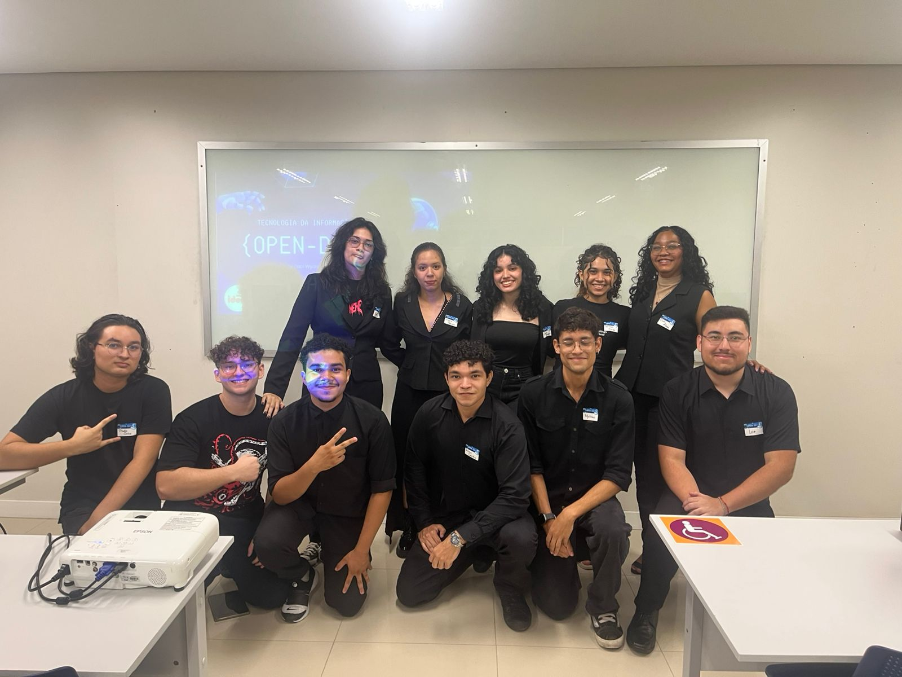
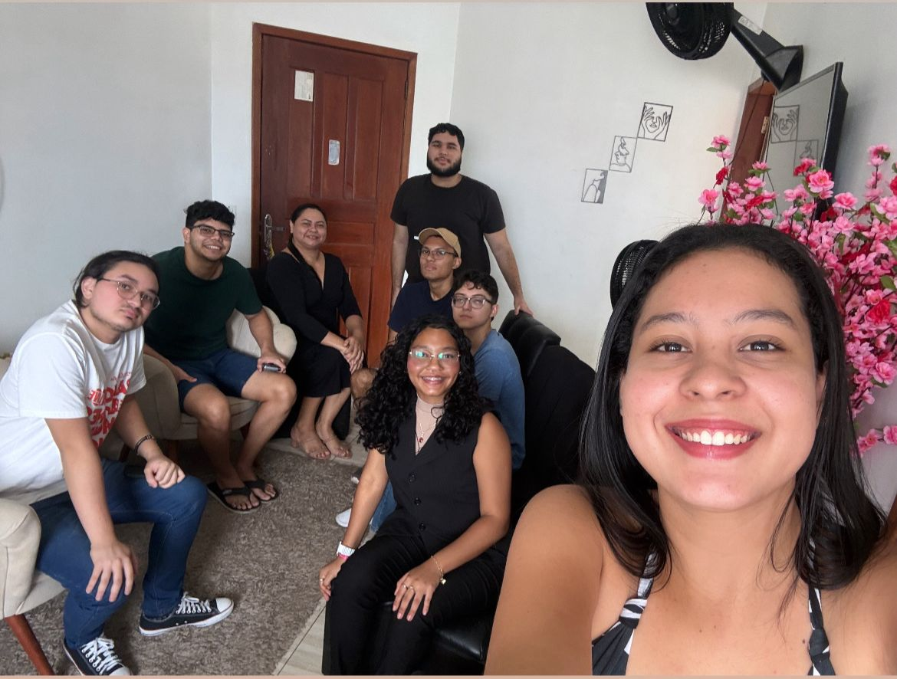

Ericka Vitória
Desenvolvedora FullStack iniciante
Desenvolvedora FullStack iniciante
Estudante de sistemas de informação e técnica em Informática, com interesse em desenvolvimento de software e tecnologia. Sou proativa, organizada, comunicativa e tenho facilidade para aprender e busco melhorar meus conhecimentos em desenvolvimento web e demais aplicações.

No dia 23 de abril de 2026 participei do 1º Open Day anual da instituição Faci Wyden em conjunto com o Colégio Ideal. Atuei apresentando e explicando sobre o curso de Sistemas de informação para os alunos visitantes, mostrando os diferenciais da área de Tecnologia da Informação, os objetivos da graduação e as oportunidades no mercado de trabalho. Foi uma experiência muito enriquecedora, que contribuiu bastante para desenvolver minha oratória, comunicação e também agregar ainda mais ao meu currículo.

Realizei uma visita técnica a uma clínica de estética com o objetivo de conhecer as estratégias utilizadas para fidelização de clientes e compreender como a tecnologia pode contribuir para a melhoria da experiência do consumidor. Durante a visita, observei os processos de atendimento, relacionamento com os clientes, agendamento de serviços, acompanhamento pós-atendimento e as ações empregadas para fortalecer a fidelização, como programas de benefícios, comunicação personalizada e uso de ferramentas digitais. Essa experiência proporcionou uma visão prática sobre a integração entre gestão, marketing e tecnologia, ampliando meus conhecimentos sobre estratégias de retenção de clientes e reforçando a importância de oferecer um atendimento de qualidade aliado a soluções tecnológicas eficientes.
Curso Téc. Informática
Instituição: EETEPA - Magalhães Barata
Status: concluído (2022-2024)
Bacharelado em Sistemas de Informação
Instituição: Faci Wyden
Status: em andamento | previsão de conclusão: 30 de junho de 2029
Programação de Aplicativos
Instituição: Prepara Cursos
Status: concluído (2023-2024)
Preparatório Primeiro Emprego
Instituição: Prepara Cursos
Status: concluído (2021-2023)
Criando um projeto com interface gráfica (Python/Kivy)
Instituição: Fundação Bradesco
Status: concluído (Janeiro de 2026)